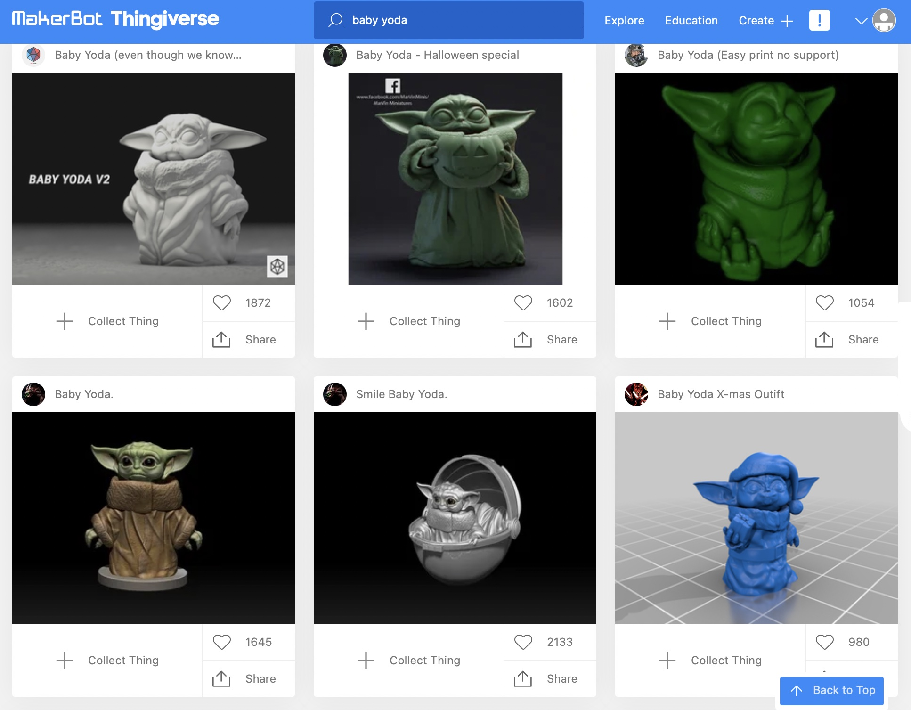
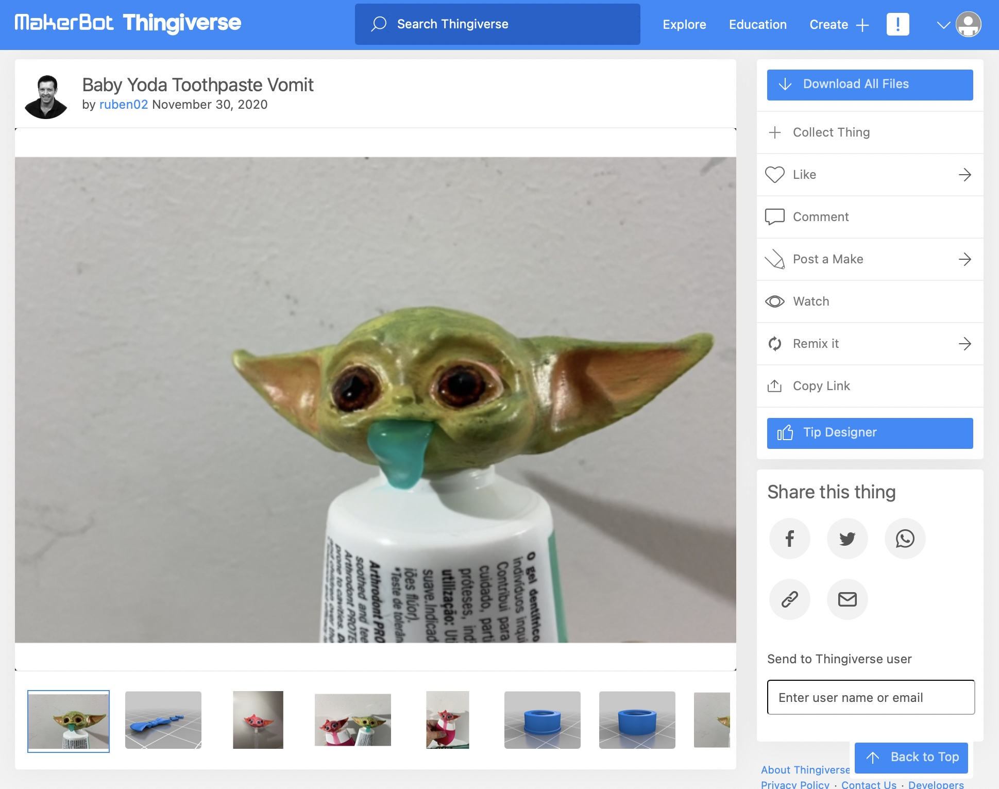

Maker Coin Challenge!

It's Maker Day 2021: Pandemic Edition
This year we are going to work on 3D Printing and Design
To navigate, use your right and left arrow keys, or click the arrows in the bottom right
There are a couple YouTube videos you will have to click to play
Originally this was going to be all about...
Baby Yoda
He's cute, but he is taking over Thingiverse
Have we gone too far? This can't be hygienic
Thankfully I found inspiration
"Doomscrolling" Twitter during the Pandemic, I ran into this Tweet...about Facebook...about TikTok. As I am old, I do not have TikTok, but I was fascinated to learn that a) TikTok is still a thing and b) this remarkable story happened there
Source: @EtheHerring on Twitter
This is Jimmy Choi, he is an elite athlete with 170k TikTok followers who has been on 4 seasons of American Ninja Warrior. He has Parkinson's Disease, which drove him to do burpees, so much so that he recently broke a World Record! Source: TikTok
Jimmy posted this video to his TikTok in late 2020 to vent (note: he chose Taylor Swift, not me)
Parkinson's Disease can cause tremors and spasms
"I can break fitness world records, but I can't take a pill I need to function," he told Freethink. "It's like a dream and a nightmare rolled into one."
Source: TikTok
Brian Alldridge saw the video, it upset him and he posted this response
He directs country music videos and describes himself as "The CEO of Snapple Facts". He doesn't have a 3D printer or experience with 3D design in Fusion 360
He had an idea for a better design and taught himself Fusion 360 to bring it to life
Quick Snapple Fact: The average cat can jump 5 times as high as its tail is long
Source: TikTok
The story went viral in January. At this point a number of contributors are working to enhance the design, patent it, and donate the patent to charity
You can download the most recent design here. If you have a 3D printer you can print one straight away
You can donate to the Michael J Fox Foundation here
Source: TikTok
My take on this:
Source: Thingiverse
- Jimmy is an inspiration
- Brian is an inspiration
- Consumer 3D printing and design has made real progress
- TikTok can be a force for good(???)
- It's crazy to think that this was an unsolved problem
- It's crazier that it is being solved in this pattern
But I will take it!
Watch this 2020 VICE video
- Consumer 3D printing has never really taken off, but it is popular with "nerdy hobbyists" (🤨 mild offense taken)
- 3D printing has continued to get cheaper, easier, and more advanced
- Commercial manufacturing use cases make sense
- 3D printing is uniquely well suited for use cases like space travel
Maker Coin
If all went to plan you received a 3D printed Maker Coin, similar to the image on the first slide, in the mail from me. Hopefully the chain makes it easy to attach to a backpack or keychain!
Check out Angus on his YouTube channel Makers Muse, which has 730k subscribers, and watch this video where he explains the Maker Coin:
What about the "Challenge" part of this?
The challenge is for you to design your own Maker Coin!
The rules are:
- Do not spend any money on a 3D printer (I will print your project)
- Do not spend any money on software (free versions are sufficient)
- Ask an adult for help installing software
- In total this is a challenging project. There is no rush. Try your best not to get frustrated, stick with it
Many "nerdy hobbyists" like to use Fusion 360. Brian used it for the pill bottle. Angus will walk you thru how to design your Maker Coin in Fusion 360. If you cannot install software on your computer, or if you already know and like TinkerCad, this is a perfectly fine alternative
Angus uses InkScape in his tutorial to add a logo, please use whatever art software you are comfortable with
Maker Coin Design in Fusion 360
I had to pause, rewind, and rewatch this video a number of times...stick with it!
Wrap Up
When you are able to design your Maker Coin, if you would like it printed please export an STL format file, then complete this form. If it's a valid Maker Coin, Baby Yoda and I will print and ship you your project. Best wishes on all fronts and see you post-Pandemic!